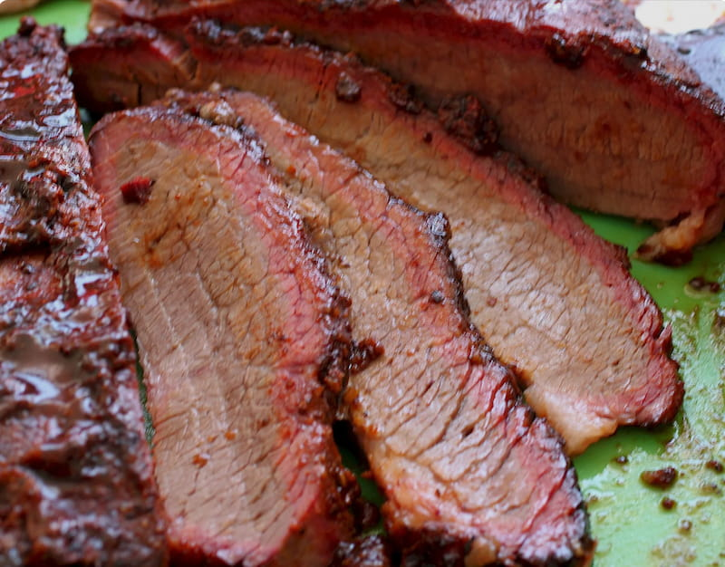
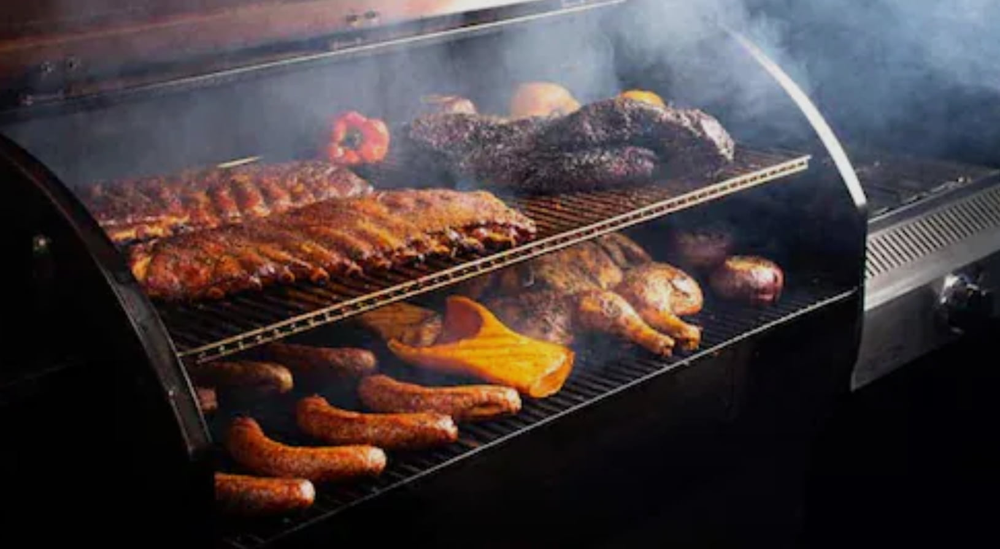
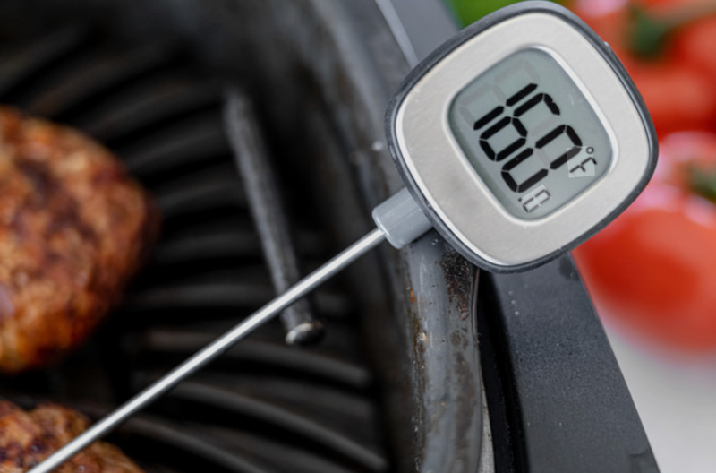
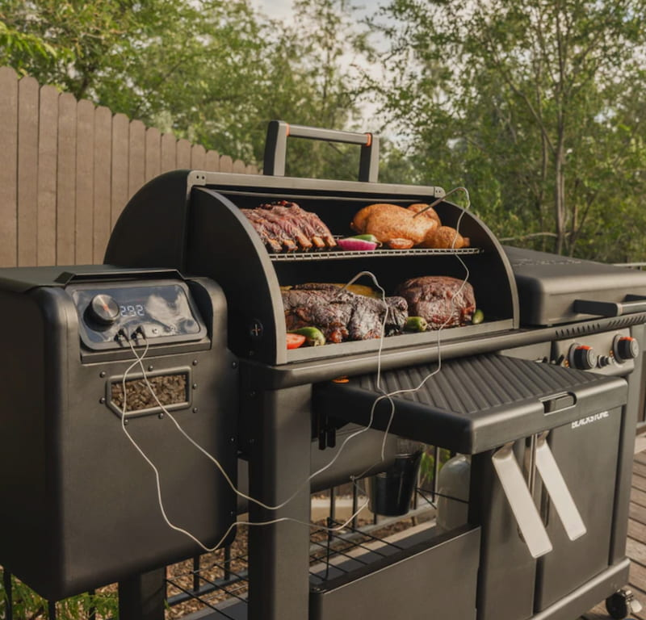
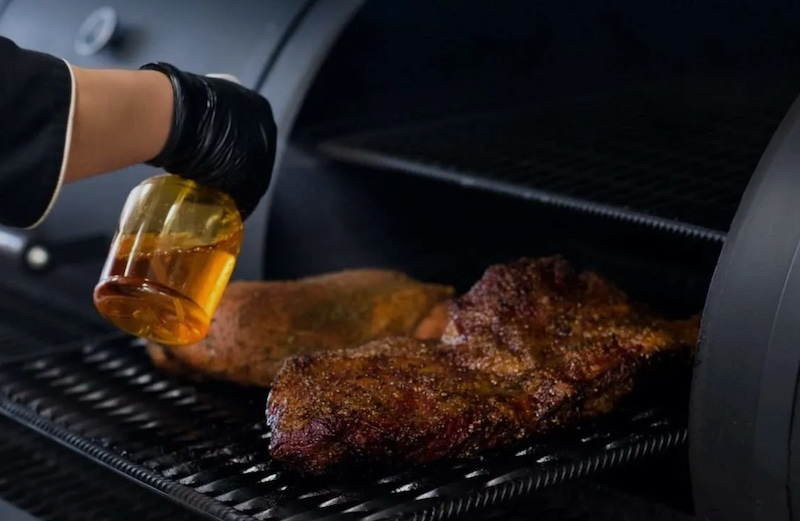

Recipes

Find beginner-friendly pellet smoker recipes for meats, sides, and family favorite meals. Each recipe focuses on simple steps, practical temperatures, and realistic cooking times.
View Recipes
Simple tips, recipes, and gear recommendations for pellet smoking.
Pellet smokers make outdoor cooking easier and tastier by combining wood-fired flavor with regulated temperature control. This guide is designed to help beginners understand the basics, choose useful equipment, and cook great meals without overcomplicating the process. Whether you're smoking your first pork shoulder or perfecting a brisket, you'll find practical tips, recipes, and recommendations to help your cookout be a success.

Find beginner-friendly pellet smoker recipes for meats, sides, and family favorite meals. Each recipe focuses on simple steps, practical temperatures, and realistic cooking times.
View Recipes
Recommended pellet smoker temperatures for iconic smoked foods:

Explore my recommended pellet smoker gear including pellet grills, grill brushes, trays, and basic tools that make smoking easier.
View Equipment
A few simple habits can dramatically improve your results: